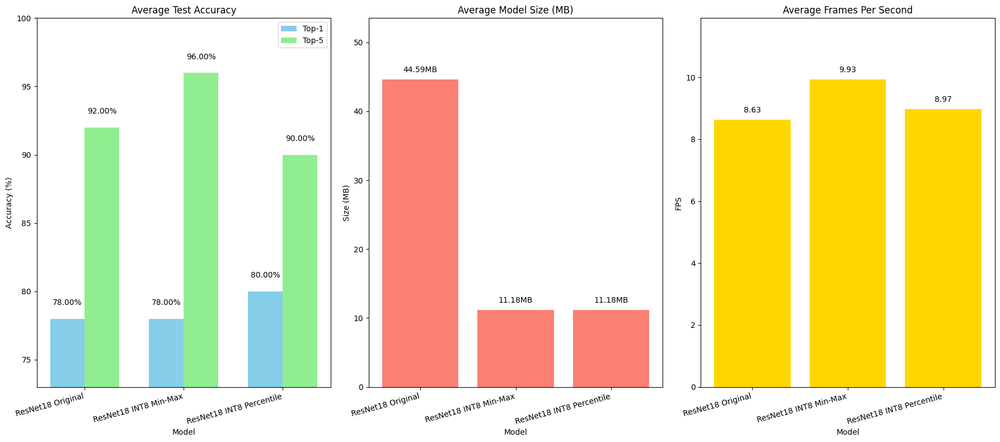
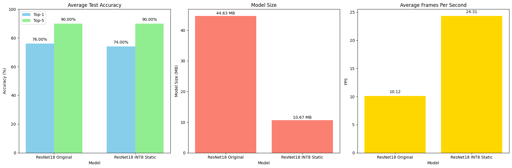
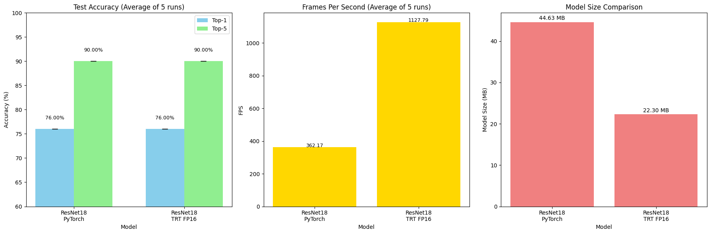

Quantization is a crucial technique for reducing neural network complexity, enabling faster and more energy-efficient inference on hardware-constrained devices. In simple terms, quantization involves converting the high-precision numerical representations (typically 32-bit floating-point numbers) used during model training into lower-precision forms (such as 8-bit integers). Contrary to a common misconception, quantization is not merely rounding values; it systematically maps floating-point numbers to discrete integer representations by scaling them appropriately. A simplified overview of the quantization is shown in Figure 1.
Figure 1: A high-level view of the quantization process, showing conversion from floating-point to integer representations.
During quantization, the dynamic range of the original high-precision model has to be compressed into a limited range of the low-precision representation. To achieve this, a calibration process is employed to determine the minimum, maximum, and scale parameters that map the high-precision representation to the low-precision.The calibration process is performed using a set of representative data samples, known as the calibration dataset, to ensure that the quantization process preserves the model's accuracy as much as possible.
Technically, quantization can significantly reduce memory storage and computational costs. For example, transitioning from 32-bit floating-point to 8-bit integer quantization reduces memory usage by fourfold and computational operations (like matrix multiplications) up to sixteenfold. However, this reduction comes with the trade-off of introducing quantization noise, potentially leading to accuracy degradation if not managed carefully.
Several quantization methods have emerged[1]:
These methods, along with others, are covered in [2], which provides a comprehensive survey of quantization techniques for neural networks. It discusses the trade-offs between memory savings and accuracy, and highlights recent trends in moving to ultra-low precision formats (e.g., 4-bit) to improve efficiency in resource-constrained settings. In this project, we experimentally explore and benchmark the practical benefits and trade-offs of some of these quantization approaches, specifically the Asymmetric Post-Training Quantization (PTQ).
Pipeline: Post-Training Quantization (PTQ) The simplified pipeline is as shown in Figure 2.
Figure 2: A simple overview of the PTQ pipeline.
In PTQ, we start with a pre-trained model and a small set of calibration data. This data helps us understand the range of values (activations and weights) the model produces. Calibration is done using this small dataset to determine scale and zero-point values for each layer. Once the calibration parameters are fixed, the model is quantized - meaning its weights and activations are converted from high-precision floats to low-precision integers (usually 8-bit). The result is a quantized model that is smaller and faster, making it easier to deploy on devices with limited resources. This process does not require re-training the model and works even with limited or unlabeled data.
However, it can sometimes lead to a small drop in accuracy compared to methods like QAT (Quantization-Aware Training). To reduce this accuracy drop, several enhancements and optimization methods [2], such as Bias Correction (Adjusts the mean and variance of weight values after quantization), Ada Round(Replaces the default round to nearest approach with a learned rounding scheme ), etc have been developed, thus making PTQ a strong choice for efficient model deployment.
Implementation: In this project, we conducted quantization experiments using a pretrained ResNet-18 model, evaluated on a subset of the ImageNet test dataset. The primary evaluation metrics included frames per second (FPS), model size (parameter count only), and accuracy (top-1 and top-5).
We specifically implemented and tested the following quantization methods:
In the min-max method, we simply take the smallest and largest values from the data to define the range. This is easy to implement but can be sensitive to outliers.
In the percentile method, we ignore extreme values at the edges (like the lowest 0.1% and highest 0.1%) and focus on the main bulk of the data. This gives a more stable range and often results in better accuracy after quantization.
These distinct approaches allowed us to assess practical performance trade-offs, specifically analyzing accuracy retention, computational efficiency, and model size reductions across CPU and GPU deployments.
Our quantization experiments yielded several interesting findings, visualized in the following figures:
Custom PTQ Int8 Implementation Results (CPU) Figure 1: The figure compares the performance of the original ResNet-18 model with its INT8 quantized versions using Min-Max and Percentile methods. In terms of accuracy, the Min-Max approach maintained the original model’s top-1 accuracy at 78%, while even improving the top-5 accuracy to 96%. The Percentile method slightly increased the top-1 accuracy to 80%, though the top-5 accuracy dipped slightly to 90%. Both quantized models showed a dramatic reduction in model size—from 44.59MB down to 11.18MB, which is roughly a 75% decrease. Despite the reduced precision, inference speed (measured in FPS) remained stable. This stability is likely because the custom quantization setup did not include activation calibration.
PyTorch Static PTQ API (INT8 Quantization) Results (CPU) Figure 2: The final results, averaged over five runs, compare the original ResNet-18 model with its INT8 static quantized version. The quantized model maintained the same top-5 accuracy of 90%, while the top-1 accuracy dropped slightly from 76% to 74%. In terms of efficiency, the quantized model saw a significant boost in inference speed—from 10.12 FPS to 24.31 FPS, more than doubling the original throughput. Additionally, the model size was reduced from 44.63MB to 10.67MB, making the INT8 static version highly suitable for deployment on resource-constrained devices without a major trade-off in accuracy.
TensorRT FP16 Quantization (GPU) Results Figure 3: The performance comparison highlights the impact of converting the ResNet-18 model to FP16 precision using TensorRT for GPU deployment. Both the original PyTorch model and the TensorRT-optimized FP16 version achieved the same top-1 and top-5 accuracies of 76% and 90%, respectively, indicating no loss in prediction quality. However, the TensorRT FP16 model delivered a significant improvement in inference speed—from 362.17 FPS to 1127.79 FPS,while reducing the model size by nearly half. This showcases the power of FP16 optimization for high-throughput, low-latency inference on GPUs.
The code implementing our method is available at: GitHub Repository
[todo]Through this project, we found that [summarize results or insights]. A few challenges we encountered were [mention issues or tradeoffs]. We believe [any opinions or perspectives on the outcome or future work].
[todo add umar][1] Nagel, Markus, et al. "A white paper on neural network quantization." arXiv preprint arXiv:2106.08295 (2021).
[2] Gholami, Amir, et al. "A survey of quantization methods for efficient neural network inference." Low-Power Computer Vision. Chapman and Hall/CRC 291-326. (2022).